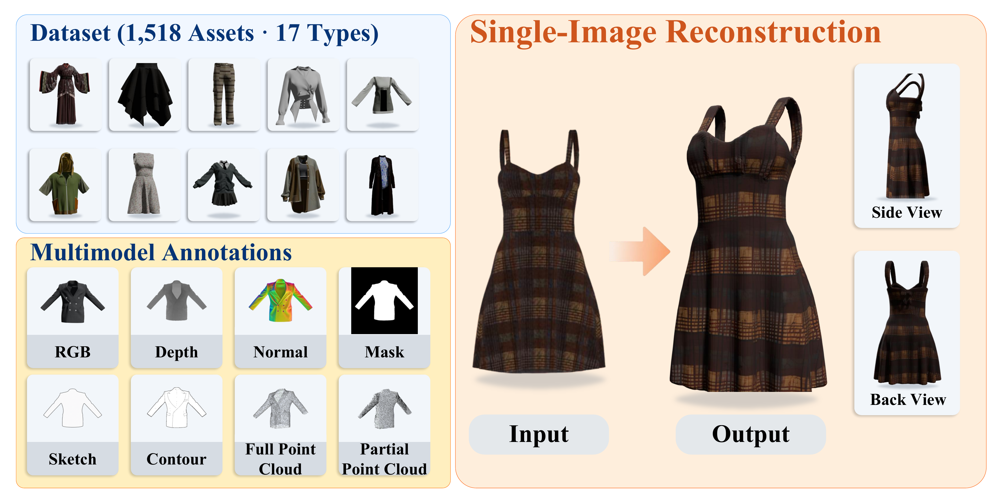
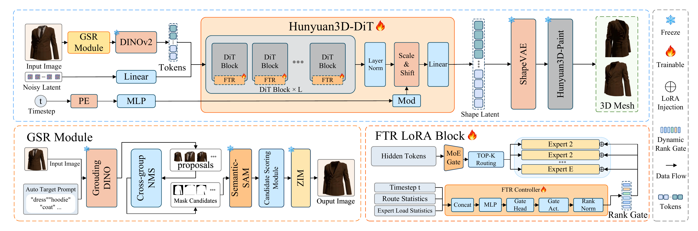
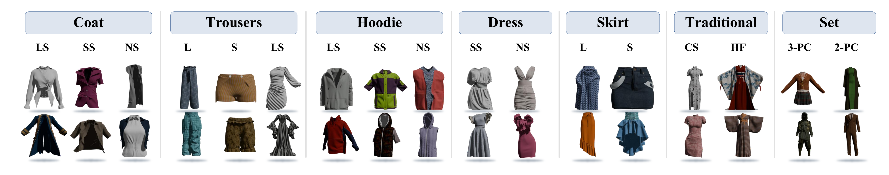
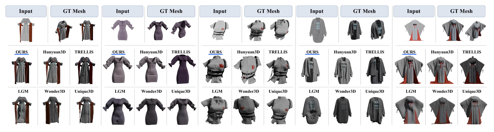

Single-image 3D reconstruction has advanced rapidly, yet standalone garments remain challenging due to thin-shell geometry, open boundaries, and layered structures. Existing datasets and evaluation protocols provide limited support for systematic evaluation in this setting. We introduce MagicGarment, a benchmark for single-image standalone 3D garment reconstruction with 1,518 professionally constructed assets across 17 composite garment types, aligned multimodal annotations, and a unified evaluation protocol. We further establish a garment-aware reference baseline by adapting a pretrained image-to-3D backbone at two levels: Grounded Semantic Refinement (GSR) provides garment-focused visual conditioning, while Flow-Time-Route LoRA (FTR-LoRA) adapts the frozen 3D generative backbone using flow-timestep, token-routing, and expert-load information. Experiments demonstrate MagicGarment's benchmark utility and the effectiveness of garment-aware adaptation.




Hanfu
Long-Sleeve Dress
Three-Piece Set